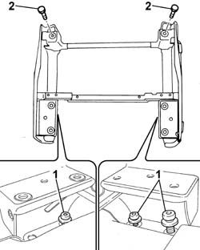
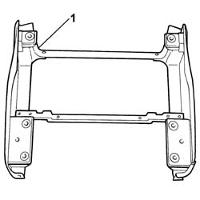

7045A22 L/H OR R/H FRONT SEAT SUPPORT/GUIDE - R+R WITH SEAT REMOVED
- Path
- Procedures > 70 FITTINGS > 7045 FRONT SEATS > 7045A FRONT SEAT ASSEMBLY > 7045A22 L/H OR R/H FRONT SEAT SUPPORT/GUIDE - R+R WITH SEAT REMOVED
- Kind
- repair procedure (removal / refitting; the operation number is the code)
- Applies to
- all engines; all production periods
- Interactive page
- https://sloeber94.github.io/elrnDB-fUlss/en/#/179007842
Applies to: all engines; all production periods
 Removing
Removing
 Refitting
Refitting1. Undo the rear bolts fixing the seat support.
2. Undo the front bolts fixing the seat support.

Applies to: all engines; all production periods
1. Remove the front driver's seat support.

Applies to: all engines; all production periods
Refitting
Removing- Fit the front driver's seat support.
- Tighten the front bolts fixing the front driver's seat support.
- Tighten the rear bolts fixing the front driver's seat support.